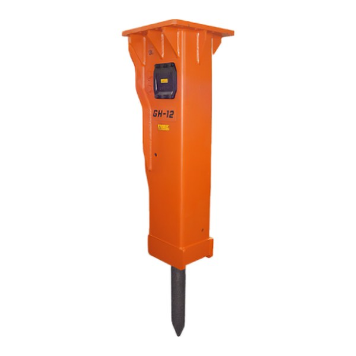
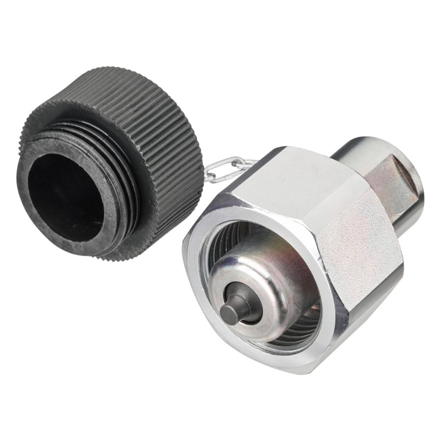
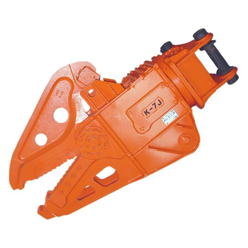
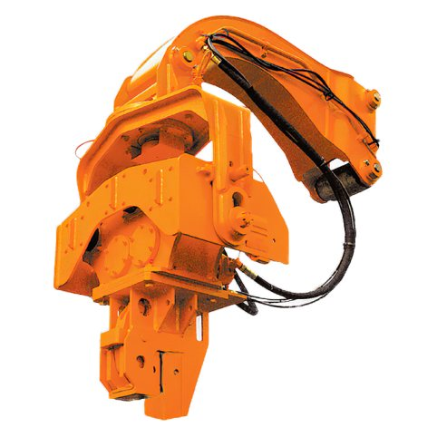
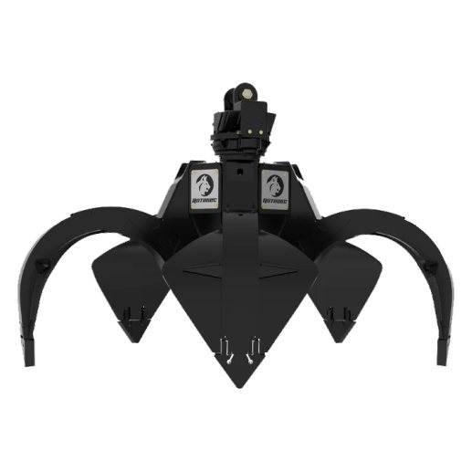
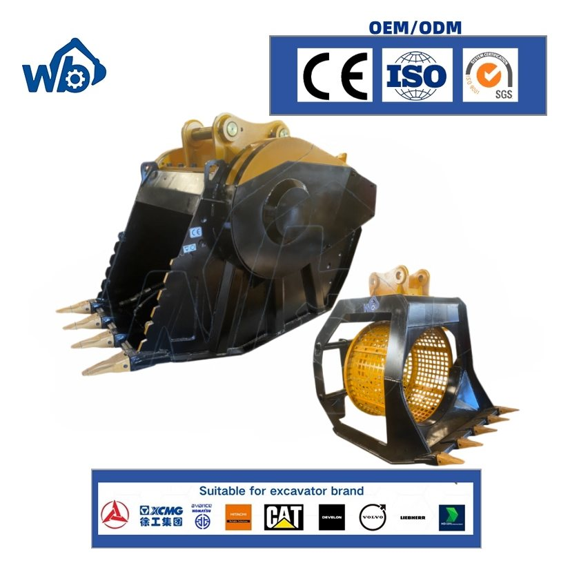
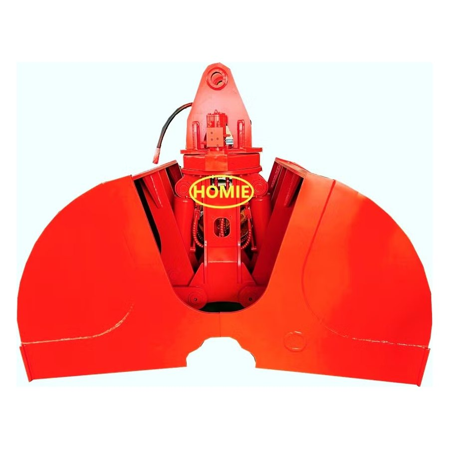
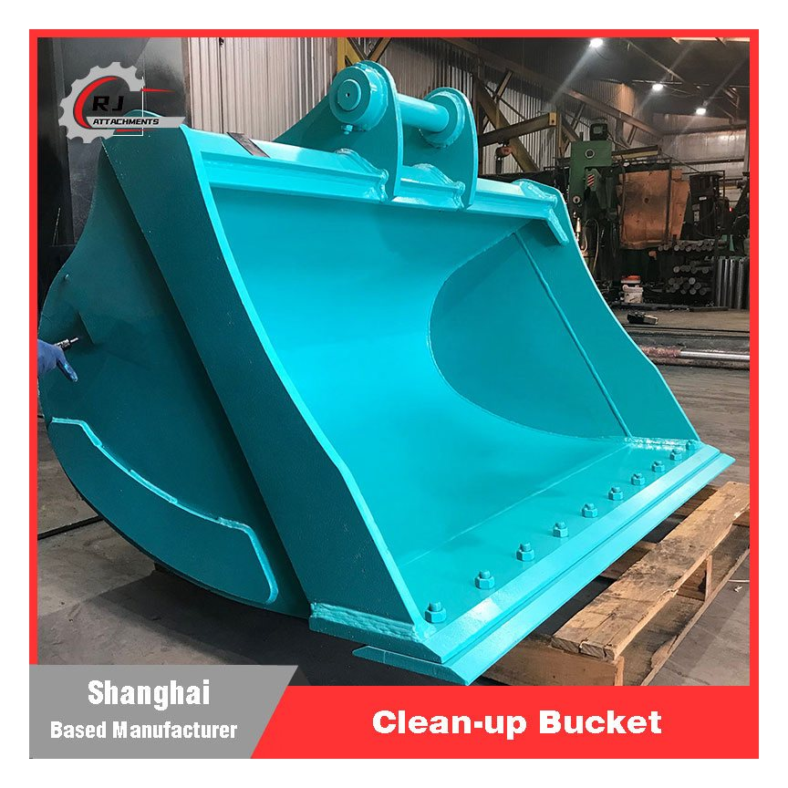

Start / Abbruchroboter & Abbruchtechnik / Siebschaufel, hydraulisch drehend (360°) für Bagger

Abbildung ähnlich – zeigt den Produkttyp.
Abbruchroboter & Abbruchtechnik
Siebschaufel, hydraulisch drehend (360°) für Bagger
Rotierende Siebschaufel zum Trennen von Erdreich, Schutt und Gestein.
Die Siebschaufel trennt Aushub, Bauschutt und Gestein durch eine rotierende Siebtrommel direkt am Bagger. Sie ersetzt separate Siebanlagen auf kleinen Baustellen. Erwartet werden verschleißarme Siebelemente, wechselbare Maschenweite und ein Hydraulikmotor mit ausreichender Leistung für den Trägerbagger.
Technische Daten
| Bauart | rotierende Siebtrommel |
|---|---|
| Antrieb | Hydraulikmotor |
| Trägergewicht | 5-25 t |
| Siebung | Maschenweite wählbar |
| Material | Konstruktionsstahl, verschleißfeste Siebe |
| Zolltarifnummer (HS) | 84314980 |
EU-Normen und Vorschriften
2006/42/EG (ab 20.01.2027: (EU) 2023/1230)Maschinenrichtlinie / Maschinenverordnung, CE-Konformität (auswechselbare Ausrüstung)EN ISO 12100Sicherheit von Maschinen, RisikobeurteilungEN 474-1Erdbaumaschinen, allgemeine Sicherheitsanforderungen
Passt dazu
Weitere Produkte dieser Kategorie

Abbruchroboter, ferngesteuert (ca. 1-2 t)Funkferngesteuerter Elektro-Abbruchroboter mit Hydraulikarm für Entkernung, Rückbau und Asbestsanierung in beengten Innenräumen.

Abbruchroboter, ferngesteuert, mittlere Klasse (ca. 2-3 t)
Abbruchroboter, ferngesteuert, schwere Klasse (ca. 5 t)Funkferngesteuerter Schwer-Abbruchroboter der 5-t-Klasse für großvolumigen Betonabbruch, Fundament- und Industrierückbau.

Hydraulischer Abbruchhammer für 20-t-BaggerHydraulikhammer der 20-t-Klasse für Betonabbruch, Fundamentrückbau und Felsarbeiten am Bagger.

Abbruchschere / Pulverisierer für 20-t-BaggerRotierende Hydraulikschere für Bagger von 20 bis 30 t zum Zerteilen von Stahlträgern, Bewehrung und Betonteilen.

Betonpulverisierer, hydraulisch 360° (20-30 t)Drehbare Abbruchzange zum Brechen von Stahlbeton und Trennen der Bewehrung für den sortenreinen Rückbau.

Hydraulischer Schnellwechsler (20-t-Klasse, Doppelverriegelung)Hydraulische Schnellwechselkupplung zum Werkzeugwechsel am Bagger vom Fahrersitz aus, mit doppelter Verriegelung.

Meißel für Hydraulikhammer (Spitzmeißel, Ø ca. 140 mm, 20-t-Klasse)

Wartungs- und Verschleißteil-Set für Hydraulikhammer (Dichtsatz, Buchsen, Haltebolzen, Meißelpaste)

Hydraulik-Schlauchsatz mit Flachdichtkupplungen (bis 350 bar) für Hammer und Anbaugeräte

Wechselbacken-Kit für Abbruchschere und Pulverisierer (Schneidmesser und Brechzähne, verschleißfester Stahl)

Multi-Abbruchschere (Multiprozessor) mit hydraulisch wechselbaren Backen, für 18–30-t-BaggerEin Anbaugerät mit sechs wechselbaren Backen für Schrottschneiden und Abbruch am Bagger, hydraulisch 360° drehbar.

Hydraulische Stahlschere (Schrottschere) für Bagger der 18–27-t-Klasse, 360° drehbarRobuste Stahl- und Schrottschere für Rückbau, Schrottplatz und Stahlbau, schneidet Rundstahl (Kennzahl 30 mm), Profile und Bleche.

Anbauverdichter (hydraulische Verdichterplatte) für Bagger der 17–23-t-KlasseHydraulische Rüttelplatte am Baggerarm (900 kg) zum Verdichten von Gräben, Rohrleitungszonen und Straßenflicken aus dem Fahrerhaus.

Vibrationsramme (hydraulischer Vibrationshammer) für Bagger der 18–25-t-Klasse, für Spundbohlen und ProfileAm Baggerarm geführter Vibrationshammer (265 kN) zum Einrütteln und Ziehen von Spundbohlen, Trägern, Rohren und PV-Profilen.

Polypgreifer (Mehrschalengreifer) mit Rotator für 20–24-t-BaggerFünfschaliger, endlos drehbarer Polypgreifer (0,5 m³) für Schrott, Holz, Stein und Abbruchmaterial.

Abbruchzange für Minibagger (1,7–4 t), hydraulisch, einzylindrigKompakte einzylindrige Abbruch- und Schneidzange (210 kg) für Minibagger, zum Zerkleinern von Beton und Durchtrennen von Bewehrung.

Brecherlöffel (Backenbrecher-Löffel) für 20-t-BaggerHydraulischer Brecherlöffel zum Zerkleinern von Beton und Gestein direkt vor Ort.

Zweischalengreifer (Schalengreifer) für Bagger, drehbarHydraulischer Schalengreifer für Schüttgut, Aushub und Baggerarbeiten.

Erdbohrer-Antrieb (Auger Drive), hydraulisch, für BaggerHydraulischer Erdbohrer für Bagger zum Bohren von Pfahl-, Zaun- und Pflanzlöchern.

Grabenräumlöffel (Grabenlöffel, kippbar) für BaggerBreiter Böschungs- und Grabenräumlöffel für Planier- und Grabenarbeiten.

Tiltrotator (Schwenk-Kipp-Rotator) für Bagger 5-8 t

Holzgreifer / Rotator-Greifer für BaggerHydraulischer drehbarer Holz- und Steingreifer für Bagger.

Skelett-Siebschaufel (Sieblöffel) für BaggerSiebschaufel mit Stabrost zum Aussieben von Erdreich und Bauschutt.